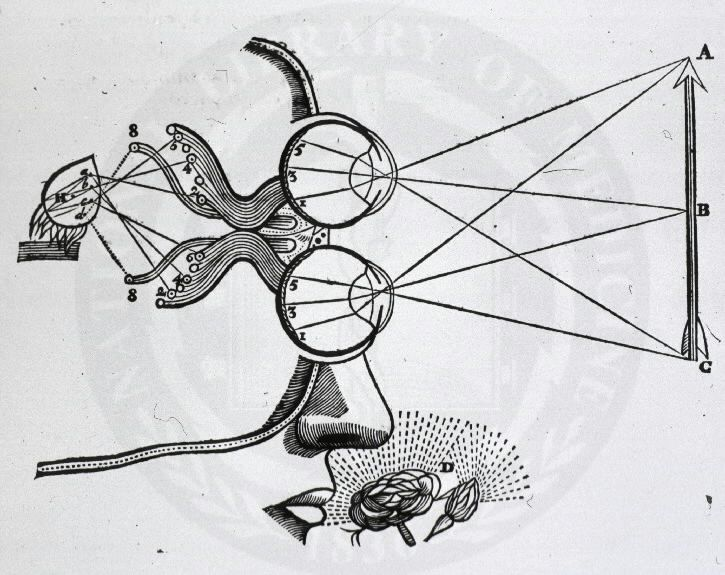

Who Was George Berkeley?
George Berkeley (1685–1753), also known as Bishop Berkeley, was an Irish philosopher and one of the most important thinkers of the early modern period. He is best known for developing a radical form of idealism and immaterialism according to which sensible objects cannot exist independently of perception.
Berkeley was closely associated with the British empiricist tradition alongside John Locke and David Hume. Yet Berkeley took empiricism in a strikingly different direction. Instead of using sensory experience to defend a world of mind-independent material substances, he argued that what we directly experience consists of ideas perceived by minds or spirits.
His philosophy raises one of the most famous questions in modern philosophy: what does it mean for a physical object to exist? Berkeley's answer is associated with the Latin expression esse est percipi, usually translated as "to be is to be perceived." His philosophy therefore connects epistemology, metaphysics, philosophy of mind, perception, and theology.
George Berkeley: Quick Facts
- Full name — George Berkeley
- Born — 1685
- Died — 1753
- Birthplace — County Kilkenny, Ireland
- Known as — Bishop Berkeley
- Philosophical period — Early modern philosophy
- Tradition — British empiricism and idealism
- Major philosophical position — Immaterialism
- Major subjects — Idealism, perception, epistemology, metaphysics, philosophy of mind, theology, mathematics, and vision
- Famous principle — Esse est percipi
- Major work — A Treatise Concerning the Principles of Human Knowledge
- Other major work — Three Dialogues between Hylas and Philonous
- Important early work — An Essay Towards a New Theory of Vision
George Berkeley's Early Life and Historical Background
George Berkeley was born in Ireland in 1685 and was educated at Trinity College Dublin. His intellectual development took place during a period in which European philosophy was undergoing major changes. Thinkers such as René Descartes, John Locke, Isaac Newton, and Nicolas Malebranche were transforming philosophical discussions about knowledge, perception, science, and reality.
Berkeley became particularly interested in the relationship between human perception and the external world. Rather than accepting without question the assumption that perceptions represent an underlying material reality, he investigated what human beings can actually experience and know.
His philosophical project eventually led him toward immaterialism: the view that the material substance traditionally supposed to exist behind sensible qualities is unnecessary and unintelligible. His philosophy consequently became one of the most distinctive developments in early modern metaphysics.
George Berkeley and the Enlightenment
George Berkeley belongs to the intellectual world of the Enlightenment, although his philosophy does not fit neatly into the later Enlightenment emphasis on secularism, materialism, and scientific rationalism. Berkeley was deeply religious and regarded philosophical inquiry as compatible with theological belief.
His work nevertheless participated in a central Enlightenment concern: determining the limits and foundations of human knowledge. Berkeley challenged inherited assumptions about matter, causation, perception, and abstract reasoning by asking what experience actually gives us.
Berkeley's idealism was therefore part of the broader transformation of early modern philosophy. His arguments challenged both materialist theories and aspects of the philosophical "way of ideas" associated with Locke. His unusual solution to problems of perception would later influence debates involving Hume, Kant, and other philosophers.
George Berkeley and Empiricism
George Berkeley's empiricism begins with the idea that human knowledge is closely connected with experience. Berkeley examines the contents of perception rather than assuming that the mind possesses direct access to an independently existing material substance.
In ordinary experience, people encounter colors, sounds, textures, tastes, shapes, movements, and other sensible qualities. Berkeley argues that these are ideas presented to the mind. We do not first perceive an invisible material substance and then discover its qualities; rather, sensible qualities themselves constitute what we experience as physical objects.
Berkeley therefore pushes empiricism toward idealism. His question is not simply where knowledge comes from but what the objects of knowledge actually are. This is one reason Berkeley's philosophy is important in the history of both empiricism and idealism.
What Was George Berkeley's Philosophy?
The central claim of Berkeley's philosophy is that sensible objects do not exist as mind-independent material substances. The things people ordinarily call physical objects are collections or combinations of sensible ideas that are perceived by minds.
Berkeley distinguishes between ideas and spirits. Ideas are passive: they are perceived. Spirits or minds are active perceivers capable of willing, thinking, and perceiving. A human being therefore encounters the world through ideas while existing as a perceiving spirit.
This position is often called subjective idealism, although "immaterialism" is closer to Berkeley's own philosophical terminology. Berkeley's purpose was not simply to deny reality to ordinary objects. Instead, he attempted to explain their reality without appealing to an unknowable material substance existing independently of all perception.
His philosophy consequently connects metaphysics with epistemology: Berkeley asks what exists by first examining what can meaningfully be perceived and known. This makes his work one of the most important philosophical investigations of perception in early modern thought.
What Is Berkeley's Immaterialism?
Berkeley's immaterialism is the doctrine that physical objects do not consist of an underlying, mind-independent material substance. Berkeley argues that what we call a tree, table, stone, or apple is encountered through a collection of sensible qualities and ideas.
Suppose a person looks at an apple. The apple is experienced through color, shape, taste, smell, texture, and other sensible qualities. Berkeley argues that these qualities are ideas. If we remove all the qualities that can be perceived, it becomes difficult to identify what remains as an independently existing material substance.
Berkeley therefore rejects the philosophical idea of an unthinking material substratum underlying sensible qualities. His argument is not that tables and trees are imaginary. Rather, he claims that their existence consists in their being perceived and that the traditional concept of material substance adds an unnecessary and unintelligible entity.
Immaterialism is consequently a positive metaphysical theory, not merely a denial of matter. Berkeley replaces material substance with a world consisting of ideas and spirits, with God playing a central role in explaining the regularity and continuity of experience.
What Does "Esse Est Percipi" Mean?
The phrase esse est percipi is Latin for "to be is to be perceived." It is closely associated with Berkeley's philosophy because it expresses his claim about the existence of sensible objects. For an ordinary sensible object, existing means being perceived by a perceiving mind.
Berkeley's principle should not be interpreted as the claim that something disappears whenever an individual human being stops looking at it. His philosophy distinguishes between human perceivers and the divine perceiver. God provides the continuous order of sensible experience that does not depend upon whether a particular human observer is currently perceiving an object.
The principle therefore belongs to a larger theory. Berkeley argues that sensible things are ideas and that ideas require a perceiving spirit. The physical world remains orderly and stable because its sensible ideas are continuously grounded in God's perception and activity.
This is why "esse est percipi" is more than a slogan. It summarizes Berkeley's attempt to explain the existence of the sensible world without appealing to mind-independent material substance.
George Berkeley's Theory of Perception
Berkeley's theory of perception begins with the distinction between ideas and the minds that perceive them. Sensory experience presents us with colors, sounds, tastes, smells, textures, shapes, and other qualities. These immediate contents of experience are ideas rather than representations of an unknowable material substance.
Berkeley argues that perception is not a passive window through which the mind discovers hidden material objects. Instead, the sensible qualities that constitute ordinary objects are directly presented in experience. A tree is therefore experienced through a structured collection of visual, tactile, and other sensible ideas.
His account also emphasizes the importance of the relationships among different kinds of sensory experience. What people identify as a single object is often a stable collection of ideas associated together through experience.
This theory allowed Berkeley to challenge the representational theory according to which ideas inside the mind resemble external material objects. His criticism of this distinction became one of the most important aspects of his philosophy of perception.
George Berkeley's Idealism
George Berkeley's idealism holds that reality, insofar as sensible objects are concerned, consists of ideas perceived by minds rather than material objects existing independently of perception. This makes Berkeley one of the most important philosophers in the history of idealism.
Berkeley's idealism is sometimes called subjective idealism because sensible objects depend upon perception. However, Berkeley's system is not simply a claim that reality depends upon each individual's private consciousness. The regularity of the world is secured by the existence and activity of God.
Berkeley therefore rejects the assumption that idealism necessarily means that the world is imaginary or that every person creates a private reality. Ordinary objects remain real because they are ordered collections of ideas, and these ideas are produced according to a stable order ultimately grounded in God.
Berkeley's idealism became an important alternative to both materialism and Cartesian dualism and remains a major subject in contemporary discussions of metaphysics and philosophy of mind.
Berkeley on Primary and Secondary Qualities
One of Berkeley's most important arguments concerns the distinction between primary and secondary qualities. John Locke had argued that primary qualities such as extension, shape, motion, and solidity belong to bodies themselves, while secondary qualities such as color, sound, taste, and smell depend more directly upon the perceiver.
Berkeley challenges this distinction. He argues that primary qualities are no more capable of existing independently of perception than secondary qualities. Shape, extension, motion, and number are also experienced through ideas and therefore cannot serve as a secure foundation for a mind-independent material substance.
Berkeley points out that perceived qualities can vary according to circumstances and observers. The same object may appear different in size, shape, color, temperature, or other respects depending on distance, lighting, sensory conditions, or the perceiver.
His criticism is important because it attacks a major attempt to preserve a material world behind subjective experience. If primary qualities are also ideas, Berkeley argues, there is no remaining experiential basis for the supposed material substance that is supposed to possess them.
George Berkeley's Criticism of Matter
Berkeley's criticism of matter is directed against the philosophical idea of matter as an unthinking substance existing independently of perception. He argues that such a substance cannot be directly perceived and cannot be coherently conceived in the way philosophers often claim.
Materialists might argue that the ideas perceived by the senses are representations or copies of external material objects. Berkeley challenges this by asking how an idea can resemble something that is itself completely unlike an idea and inaccessible to perception.
Berkeley also argues that sensible qualities cannot be separated from the ideas through which they are perceived. If color, shape, extension, motion, texture, and other qualities are all given in experience as ideas, removing these qualities leaves no intelligible content corresponding to an invisible material substratum.
Berkeley therefore concludes that the traditional philosophical concept of material substance is unnecessary. His alternative is to recognize the reality of sensible ideas and the existence of the perceiving spirits to which those ideas belong.
George Berkeley's Criticism of John Locke
George Berkeley and John Locke are both associated with British empiricism, but Berkeley believed that Locke's theory of knowledge retained problematic assumptions about material substance and abstract ideas.
Locke distinguished between primary and secondary qualities and proposed that our ideas of primary qualities resemble qualities existing in external bodies. Berkeley argues that this position creates a problem because primary qualities such as extension and shape are also experienced as ideas.
Berkeley also challenges Locke's account of abstract ideas. He argues that philosophers sometimes attempt to construct an abstract idea of a thing that possesses a general character while lacking every particular feature. Berkeley considers this impossible for sensible ideas because actual perception always presents particular qualities.
Berkeley's philosophy can therefore be understood partly as a radical development of problems already present in Locke's empiricism. He accepts the importance of experience while rejecting the material ontology that Locke's account seemed to preserve.
Berkeley's Criticism of Abstract Ideas
Berkeley's criticism of abstract ideas is another important part of his epistemology. He argues that many philosophical difficulties arise because thinkers assume that the mind can form completely abstract ideas that cannot actually be perceived or imagined.
For example, Berkeley questions whether a person can genuinely imagine a triangle that is neither equilateral, isosceles, nor scalene, but somehow represents triangles in general while possessing none of their particular features. His argument is that actual mental images remain particular.
Berkeley does not deny that words can have general meanings. Instead, he distinguishes between the use of a particular idea as a sign for a wider class and the existence of a completely abstract idea inside the mind.
This argument is important for Berkeley's larger project because it attacks philosophical concepts that appear meaningful only because language encourages people to treat them as if they correspond to genuine ideas.
Berkeley's Philosophy of Mind and Spirit
Berkeley's philosophy of mind distinguishes sharply between ideas and spirits. Ideas are passive objects of perception, while spirits are active beings capable of perceiving, thinking, willing, and acting.
A mind cannot be reduced to another collection of ideas because a perceiving subject is required to experience ideas. Berkeley therefore treats the self or spirit as fundamentally different from the sensible ideas that it perceives.
Human minds are finite spirits. They perceive ideas and exercise limited forms of agency. God, by contrast, is an infinite spirit and plays a fundamental role in Berkeley's explanation of the regular structure of the world.
Berkeley's distinction between ideas and spirits is essential for understanding why his idealism is not simply the claim that everything is a thought inside an individual human mind. His metaphysics contains both passive ideas and active perceiving spirits.
George Berkeley's Philosophy of God
God occupies a central position in Berkeley's philosophy. Berkeley's idealism requires an explanation for the stability, order, and continuity of sensible experience, and he identifies God as the ultimate source of this order.
Human beings perceive only a limited portion of the sensible world. Yet objects appear to continue existing when no particular person is looking at them. Berkeley explains this continuity by appealing to God's perpetual perception and activity.
God also explains why our sensory experiences are not arbitrary inventions of our own minds. The ideas received through sensation occur according to a regular order that human beings do not freely choose. Berkeley therefore distinguishes the vivid ideas of sense from the weaker ideas that human imagination can voluntarily create.
Theology is therefore not an optional addition to Berkeley's metaphysics. The concept of God helps him explain the objective regularity of experience while avoiding the existence of an unknowable material substance.
How Does Berkeley Explain the External World?
A common objection to Berkeley's philosophy is that if objects exist only as perceived ideas, then the external world should disappear whenever nobody is looking at it. Berkeley's answer depends on distinguishing individual human perception from the existence of ideas within the divine order of experience.
When a person leaves a room, the table does not cease to exist in Berkeley's system. The table continues as a stable collection of sensible ideas because the world is continuously ordered by God. Its existence therefore does not depend upon one particular human observer.
Berkeley's theory preserves ordinary objects while rejecting mind-independent material substance. A table remains a real table, but its reality is explained through its sensible qualities and their relation to perceiving spirits rather than through an invisible material substratum.
George Berkeley's Response to Skepticism
Berkeley developed his philosophy partly as a response to skepticism. He believed that the philosophical assumption of mind-independent material objects could actually make skepticism more difficult to avoid.
If people directly perceive only ideas inside their minds while material objects exist outside those ideas, then philosophers face the problem of determining whether their ideas accurately resemble external objects. Berkeley argues that this representational model creates a gap between experience and reality.
His idealism attempts to remove this gap. Instead of saying that perceived ideas represent unknowable material objects, Berkeley identifies sensible objects with collections of ideas and explains their regularity through the activity of God.
Berkeley therefore presents idealism partly as an anti-skeptical position. He believes that abandoning the concept of material substance can preserve the reality of ordinary experience while eliminating a supposedly unknowable world behind perception.
George Berkeley's Epistemology and Theory of Knowledge
Berkeley's epistemology begins with an examination of what human beings can perceive and know. He distinguishes ideas received through sensation from ideas produced through memory, imagination, and reflection on the operations of the mind.
Sensory ideas are particularly important because they form the basis of ordinary experience. A person sees colors, hears sounds, feels textures, tastes food, and encounters different combinations of sensible qualities. These experiences constitute the contents through which the world is known.
Berkeley argues that the mind does not perceive a material substance hidden behind these ideas. Instead, ordinary objects are constituted by collections of sensible qualities that are perceived together.
His epistemology consequently leads directly into metaphysics. The question of what human beings can know becomes closely connected with the question of what kinds of things can meaningfully be said to exist.
Berkeley's Philosophy of Vision and Perception

Before developing his mature metaphysics, Berkeley wrote extensively about vision and visual perception. His An Essay Towards a New Theory of Vision, published in 1709, investigates how human beings perceive distance, depth, size, and spatial relationships.
Berkeley argues that visual experience does not simply provide an immediate awareness of geometrical distance. Instead, visual signs become associated with tactile and other experiences through experience. What appears visually as distance can therefore be interpreted through learned relationships between different kinds of sensory information.
His theory of vision is important because it demonstrates that Berkeley's interest in perception was not limited to abstract metaphysics. He investigated concrete questions about how sensory experience works and used these investigations to challenge assumptions about what perception directly reveals.
George Berkeley on Science and Mathematics
Berkeley's philosophical interests extended beyond metaphysics and perception. He also wrote about science, mathematics, physics, and natural philosophy. His criticism of certain mathematical concepts was connected with his broader concern about abstract reasoning and the limits of meaningful ideas.
In The Analyst, Berkeley criticized aspects of the foundations of infinitesimal calculus. He questioned whether mathematicians could legitimately use certain concepts while failing to provide a clear account of their logical foundations.
Berkeley's criticisms do not mean that he rejected mathematics or science. Rather, they illustrate his insistence that intellectual concepts should be examined carefully and not treated as meaningful merely because they are useful within a theoretical system.
A Treatise Concerning the Principles of Human Knowledge
A Treatise Concerning the Principles of Human Knowledge, published in 1710, is one of George Berkeley's most important philosophical works. It presents his arguments concerning perception, ideas, matter, spirits, and the foundations of human knowledge.
Berkeley begins by examining the objects of human knowledge and argues that sensible objects are collections of ideas. He then attacks the notion that these ideas exist as representations of mind-independent material substances.
The work develops his immaterialist metaphysics and explains why spirits must be distinguished from ideas. It also develops Berkeley's arguments concerning primary and secondary qualities, abstract ideas, and the supposed existence of matter.
The Principles is therefore fundamental for understanding Berkeley's idealism. It contains the core arguments that made him one of the most distinctive philosophers of the early modern period.
Three Dialogues Between Hylas and Philonous
Three Dialogues between Hylas and Philonous, published in 1713, is another major work by Berkeley. Rather than presenting his arguments entirely as a conventional philosophical treatise, Berkeley develops them through a dialogue between two characters.
Hylas represents the materialist position, while Philonous defends Berkeley's immaterialist philosophy. Through their discussion, Berkeley examines questions concerning sensible qualities, matter, perception, reality, and philosophical skepticism.
The dialogue form allows Berkeley to anticipate objections and develop his arguments conversationally. It also makes the work one of the clearest presentations of his criticism of material substance.
Together with the Principles, the Three Dialogues forms the central philosophical foundation for Berkeley's theory of idealism and immaterialism.
George Berkeley's Main Philosophical Ideas
1. Esse Est Percipi
Berkeley argues that sensible objects exist as perceived ideas. "To be is to be perceived" summarizes the dependence of sensible objects upon perception.
2. Immaterialism
Berkeley rejects material substance as an independent, unthinking substratum underlying sensible qualities. Reality consists instead of ideas and spirits.
3. Idealism
Berkeley's idealism treats sensible objects as collections of ideas rather than mind-independent material substances.
4. Spirits and Minds
Spirits are active perceivers capable of thought and will, while ideas are passive objects of perception.
5. God and the Order of Experience
God provides the stable and orderly structure of sensory experience, allowing the world to remain consistent even when individual humans are not perceiving it.
6. Criticism of Abstract Ideas
Berkeley argues that many supposed abstract ideas are impossible to form and that philosophical confusion often arises from treating words as though every general term corresponds to a distinct abstract idea.
George Berkeley and John Locke: What Is the Difference?
George Berkeley and John Locke share an empiricist emphasis on experience, but their metaphysical conclusions are very different. Locke accepts the existence of material substances while arguing that human knowledge is mediated by ideas.
Berkeley radicalizes the empiricist position by asking whether there is any meaningful experiential basis for a material substance existing independently of all perception. He concludes that sensible qualities are ideas and that the supposed material substratum is unnecessary.
Their disagreement is particularly clear in the debate over primary and secondary qualities. Locke treats primary qualities as belonging to bodies themselves, while Berkeley argues that primary qualities are also perceived as ideas and cannot be separated from perception.
Berkeley can therefore be understood as both an heir to and a critic of Locke. He accepts empiricism's attention to experience while rejecting the material ontology that Locke retained.
George Berkeley and David Hume
Berkeley and David Hume are two major figures in British empiricism, but they draw different philosophical conclusions from their analysis of experience. Berkeley develops idealism and maintains a central role for God, while Hume takes empiricism toward a much more skeptical analysis of causation, substance, and the self.
Hume was familiar with the philosophical problems raised by Berkeley and developed his own account of human understanding in response to questions about ideas and experience. Berkeley's criticism of abstract ideas and material substance therefore forms part of the intellectual background against which later empiricism developed.
The comparison between Berkeley and Hume is especially important for understanding the development of modern epistemology. Berkeley asks how an appeal to perception can avoid material substance and skepticism, while Hume investigates what follows when knowledge is restricted to impressions and ideas without Berkeley's theological framework.
Major Works of George Berkeley
George Berkeley wrote on metaphysics, epistemology, perception, vision, mathematics, religion, science, and practical subjects. His most influential philosophical works focus on the relationship between ideas, perception, minds, and reality.
- An Essay Towards a New Theory of Vision — Berkeley's early investigation of visual perception, distance, depth, and the relationship between visual and tactile experience.
- A Treatise Concerning the Principles of Human Knowledge — His major systematic presentation of immaterialism, idealism, perception, ideas, spirits, and the criticism of matter.
- Three Dialogues between Hylas and Philonous — A dialogue-based defense of immaterialism and criticism of materialist metaphysics.
- Alciphron, or the Minute Philosopher — A philosophical and religious work addressing skepticism, free-thinking, morality, and religion.
- The Analyst — A critique of aspects of the foundations and reasoning employed in contemporary mathematics and calculus.
- De Motu — A work examining questions concerning motion, force, and natural philosophy.
George Berkeley's Philosophy Explained Simply
Berkeley's philosophy can be understood by beginning with a simple question: when you look at a tree, what exactly do you experience? You experience colors, shapes, textures, sounds, and other sensible qualities. Berkeley calls these contents of experience ideas.
Berkeley then asks whether it is necessary to suppose that these ideas are copies of an invisible material substance existing behind perception. His answer is no. He argues that the material substance philosophers traditionally describe cannot itself be perceived and cannot be coherently separated from the sensible qualities through which objects are experienced.
- What exists? Berkeley says that reality includes ideas and perceiving spirits.
- What is a physical object? A physical object is a stable collection of sensible ideas.
- What does esse est percipi mean? For sensible things, to exist is to be perceived.
- Does the world disappear when humans stop looking? No. God provides the continuous order of sensible experience.
- Why reject matter? Berkeley argues that mind-independent material substance is unnecessary and unintelligible.
Why Is George Berkeley Important in the History of Philosophy?
George Berkeley is important because he radically transformed the philosophical discussion of perception and reality. Rather than accepting the existence of material substance as a basic fact, Berkeley asked whether such a concept could actually be justified by experience.
His idealism also demonstrated how an empiricist theory of knowledge could lead to a radically different metaphysics. Berkeley used the empiricist emphasis on experience to challenge materialism rather than to defend it.
His arguments influenced later debates about perception, skepticism, idealism, and the nature of the external world. Berkeley's work also remains important because many modern discussions of consciousness, perception, representation, and philosophy of mind continue to ask questions that resemble those he explored.
Berkeley's lasting importance therefore lies not merely in the unusual claim that "to be is to be perceived," but in the larger philosophical challenge behind it: how should reality be understood when our access to the world is always mediated by perception?
George Berkeley's Influence and Legacy
Berkeley's influence extends across the history of modern philosophy. His arguments became particularly important in later discussions of idealism, empiricism, perception, and skepticism. His work was also part of the intellectual background for philosophers who questioned how the mind relates to the world it experiences.
His influence on David Hume is especially important in the history of British empiricism. Berkeley's arguments against material substance and abstract ideas helped shape philosophical questions that Hume approached through his own theory of impressions and ideas.
Berkeley also became an important figure in later histories of idealism. His philosophy was discussed in relation to developments leading toward German idealism and modern theories of perception, although later philosophers did not simply reproduce his system.
Today, Berkeley remains relevant to philosophy of mind, metaphysics, epistemology, philosophy of perception, and debates about the relationship between consciousness and reality.
Frequently Asked Questions About George Berkeley
Who was George Berkeley?
George Berkeley was an Irish philosopher who lived from 1685 to 1753. He was a major early modern thinker associated with British empiricism, idealism, and immaterialism.
What was George Berkeley's philosophy?
Berkeley's philosophy argues that sensible objects are collections of ideas perceived by minds rather than mind-independent material substances. His philosophy is commonly associated with idealism and immaterialism.
What is George Berkeley famous for?
George Berkeley is famous for his theory of idealism, his doctrine of immaterialism, his criticism of material substance, his theory of perception, and the principle known as esse est percipi.
What does esse est percipi mean?
Esse est percipi means "to be is to be perceived." Berkeley uses this principle to explain the existence of sensible objects as objects of perception rather than as independently existing material substances.
Was George Berkeley an idealist?
Yes. Berkeley is one of the major philosophers associated with idealism. His position is often called subjective idealism, although immaterialism is also an important term for describing his own philosophical position.
What is Berkeley's immaterialism?
Berkeley's immaterialism is the view that material substance does not exist as an independent, unthinking substratum behind sensible qualities. Instead, sensible objects consist of ideas perceived by spirits or minds.
Did Berkeley believe that physical objects exist?
Berkeley did not deny the reality of ordinary physical objects. He denied that they exist as mind-independent material substances. Objects remain real as stable collections of sensible ideas.
Did Berkeley believe that a tree exists when nobody is looking at it?
Yes, in Berkeley's philosophical system the tree continues to exist because the sensible order of the world is maintained by God. Its existence does not depend upon one particular human observer.
What did Berkeley believe about matter?
Berkeley rejected the philosophical concept of matter as an unthinking substance existing independently of perception. He argued that sensible qualities are ideas and that the supposed material substratum is unnecessary.
What did Berkeley say about primary and secondary qualities?
Berkeley rejected the claim that primary qualities such as extension, shape, and motion exist independently of perception while secondary qualities such as color and taste depend upon the perceiver. He argued that primary qualities are also experienced as ideas.
Was Berkeley an empiricist?
Yes. Berkeley is traditionally regarded as one of the major British empiricists alongside John Locke and David Hume. However, his empiricism led him toward idealism rather than materialism.
How did Berkeley criticize John Locke?
Berkeley criticized Locke's distinction between primary and secondary qualities and rejected the idea that our ideas of primary qualities resemble mind-independent material objects. He also criticized Locke's theory of abstract ideas.
What was Berkeley's theory of perception?
Berkeley argued that perception presents the mind with ideas rather than with an unknowable material substance existing behind those ideas. Sensible objects are collections of ideas that are perceived by spirits.
What did Berkeley believe about God?
God plays a central role in Berkeley's philosophy. God provides the stable and orderly structure of sensible experience and explains why the world continues to exist independently of any particular human observer.
What is Berkeley's philosophy of mind?
Berkeley distinguishes minds or spirits from ideas. Ideas are passive objects of perception, while spirits are active perceivers capable of thinking, willing, and acting.
What are Berkeley's most famous books?
Berkeley's most famous philosophical works include An Essay Towards a New Theory of Vision, A Treatise Concerning the Principles of Human Knowledge, and Three Dialogues between Hylas and Philonous.
What is A Treatise Concerning the Principles of Human Knowledge?
It is Berkeley's major 1710 philosophical work presenting his arguments about ideas, perception, immaterialism, spirits, matter, and the foundations of human knowledge.
What is Three Dialogues Between Hylas and Philonous?
It is Berkeley's 1713 dialogue defending immaterialism through a philosophical conversation between Hylas, who represents the materialist position, and Philonous, who defends Berkeley's idealist position.
How did Berkeley influence modern philosophy?
Berkeley influenced later discussions of empiricism, idealism, perception, skepticism, and the relationship between mind and world. His arguments also contributed to the intellectual background of later British and European philosophy.
What is Berkeley's place in British empiricism?
Berkeley is one of the three major British empiricists traditionally discussed alongside John Locke and David Hume. His distinctive contribution was to develop an idealist metaphysics from an empiricist analysis of experience.
Related Modern and Enlightenment Philosophers
Explore other major thinkers connected with early modern philosophy, British empiricism, rationalism, idealism, and Enlightenment thought.
Related Areas of Philosophy
Berkeley's philosophy connects with metaphysics, epistemology, philosophy of mind, philosophy of perception, empiricism, idealism, philosophy of religion, and modern philosophy.
Why George Berkeley Still Matters
George Berkeley remains one of the most provocative philosophers of the early modern period because he challenged one of philosophy's most familiar assumptions: that the sensible world must be grounded in an independently existing material substance.
His idealism, immaterialism, and theory of perception transformed the philosophical discussion of reality and knowledge. Through the principle esse est percipi, Berkeley argued that sensible objects are inseparable from perception, while his distinction between ideas and spirits provided an account of minds as active perceivers.
Berkeley's philosophy also demonstrates how closely metaphysics, epistemology, philosophy of mind, and theology were connected in early modern thought. His criticism of matter, his response to Locke, his analysis of perception, and his arguments concerning God continue to generate debate in contemporary philosophy.
Explore Great Philosophers